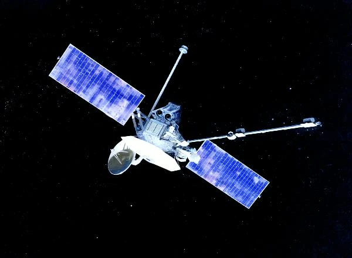
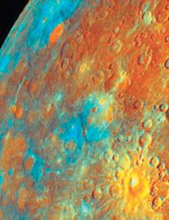
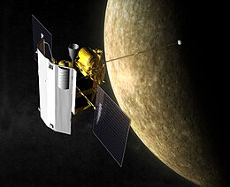
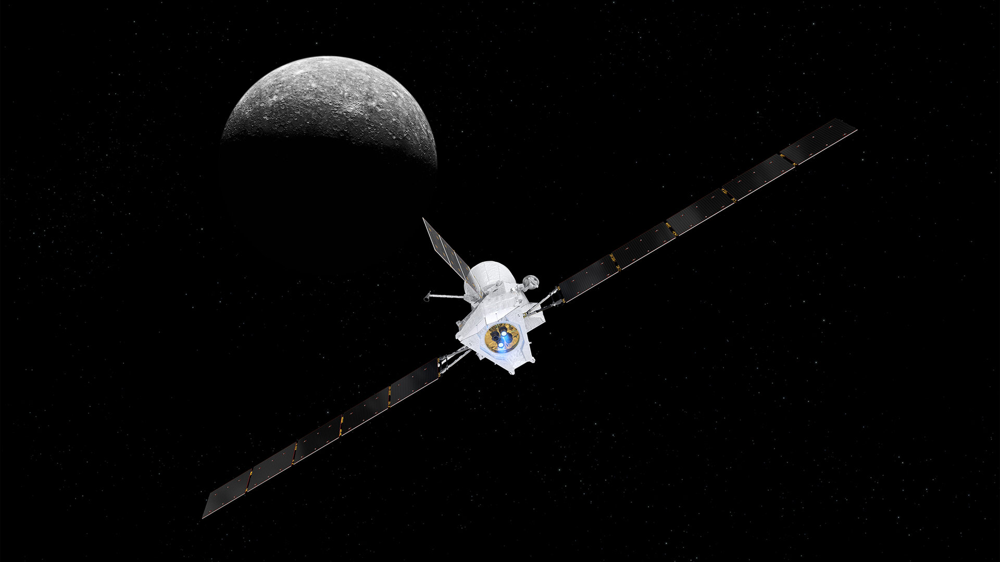

استكشاف كوكب عطارد
عطارد: الكوكب الأقرب إلى الشمس
يُعتبر عطارد الكوكب الأقرب إلى الشمس وأصغر الكواكب في النظام الشمسي، ويتميز بدرجات حرارة شديدة التفاوت بين النهار والليل.

مهمة مارينر 10
كانت "مارينر 10" أول مركبة فضائية تزور عطارد في السبعينيات، حيث قدمت لنا أول صور قريبة للكوكب وتفاصيل حول سطحه.

السطح القاسي لعطارد
يتكون سطح عطارد من الحفر والتضاريس الجبلية، وهو مشابه لسطح القمر، حيث لا توجد غلاف جوي لحماية الكوكب من النيازك.

مهمة ميسنجر
أطلقت وكالة ناسا مركبة "ميسنجر" في عام 2004، التي قدمت معلومات مهمة حول كيمياء سطح عطارد وتركيب الغلاف الجوي.

مستقبل استكشاف عطارد
لا تزال هناك العديد من الأسرار المحيطة بعطارد، ويخطط العلماء لمزيد من المهام لاستكشاف الكوكب وفهم تكوينه وتاريخه.
